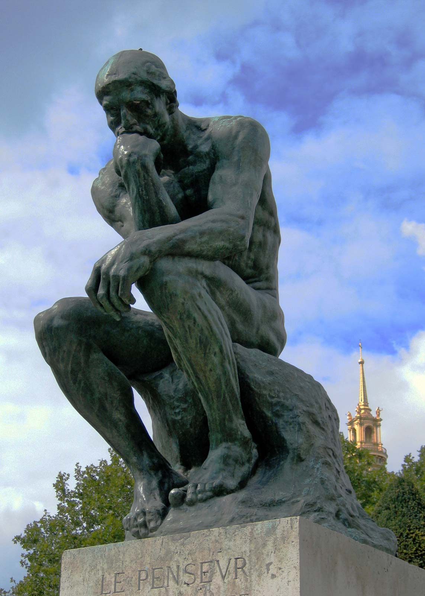

Sculpture page

The Thinker is a sculpture made by a french sculptor named Auguste Rodin, the sculpture is called "Le Penseur" in French and was fully made in Bronze and publicly casted and revealed to the population in 1906.
It is a sculpture of a man sitting on a stone. Viewers presume that the bronze man is
thinking deeply about something, with intense thoughts and great focus. According to wikipedia.com it was originally named "The Poet".